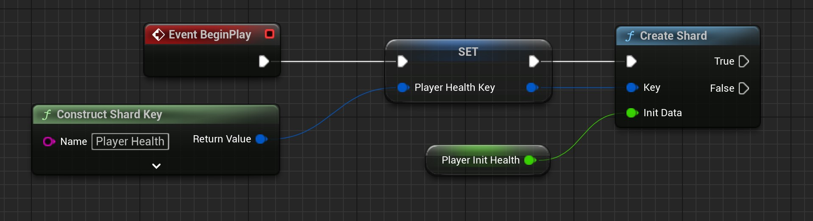
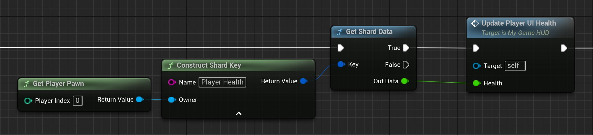
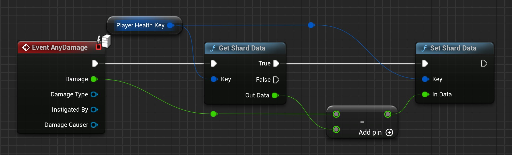
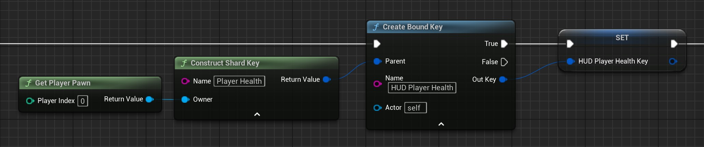
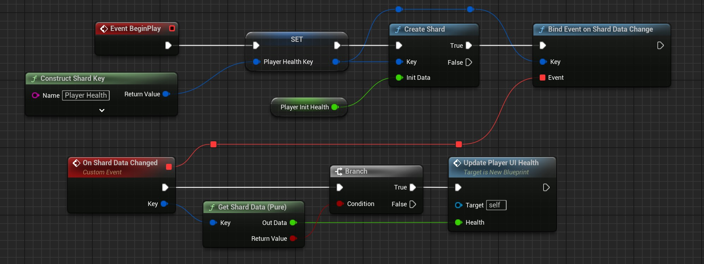
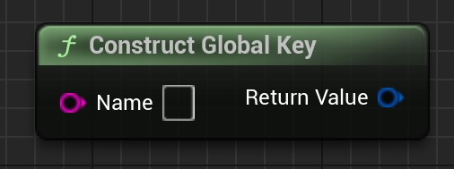

How to use in BP
Create Shard

- Construct a key
- This Key can be saved or reconstructed
- The owner is per default 'self'. In this case it's the player Pawn
- Call the 'Create Shard' node
- Connect the initial data for the shard data
- You can also conntect a literal
- You need to connect something, so the datatype for the shard can be determined
Now you have created a key pointing to the new shard.
The owner of the key is the Blueprint actor and the key name is 'Player Health'. This key is now pointing to a float shard where the value of 'Player Init Health' is entered.
- Note
- Keep in mind, that the variable 'Plazer Init Health' is not related to the shard. If the shard changed 'Player Init Health' is not affected. Not the other way around either.
Get Shard Data

- Construct a key or use one saved in a variable
- In this case we use the static 'Get Player Pawn' to get our Pawn
- We use the same name for the key as the key we have created in the step before
- Call the 'Get Shard Data'
- Connect the 'Out Data' pin where it need to be
- Keep in mind that the pin datatype need to match exacly the shard datatype
- Note
- We can reconstruct keys. For this the 'Owner' and the 'Name' need to be exacly the same, as the key we used to create the shard
- Warning
- In this example we use the 'Get Player Pawn' node. In other situations, you have to make sure that you get the right Actor as an Owner.
Set Shard Data

In this example we get the data before we set the data. For this we use the previous saved 'Player Health Key' variable, where the key is saved.
After we calculated the right value we call 'Set Shard Data' and set the new value in 'In Data'
- Warning
- With 'Set Shard Data' we also can change the datatype inside the shard. I highly recommend to not do this to avoid confusion.
Binding

Binding is one of the core features of this plugin. We get a new key. With this key we have access to an existing shard. For this we need:
- A key (as variable or as new constructed) which has access to a existing shard
- The new Owner
- A new Name
With the 'Create Bound Key' node we get a new key which has access to the same shard as the 'parent'.
Now we can access the same shard data with both keys anytime and we don't need any more data forwarding.
Advanced
 You can add Events which will be executed if a specific shard data changes.
In this example we modify the Create Shard part, where we add the 'Bind Event on Shard Data Change'. We use the same key, which we used to create the shard. No everytime the shard data changes the event 'On Shard Data Changed' will be executed and will call the 'Update Player UI Health' function.
How to use in C++
Most of the functons we need are inside the DataShardSubsystem
Create Shard
.h
UPROPERTY(EditAnywhere, BlueprintReadWrite)
float FloatValue = 875.4f;
.cpp
const FDataShardKey Key = {this, "Test Float Key"};
UDataShardSubsystem* Sub = GetGameInstance()->GetSubsystem<UDataShardSubsystem>();
Sub->CreateShard(Key, this, GET_MEMBER_NAME_CHECKED(ThisClass, FloatValue));
The DataShardSubsystem::CreateShard function has 2 overloads. The version with an Container and PropertyName are more user friendly.
- Note
- instead of creating the variable
Key you can just use the uniform initialization {Owner, "Name"} in the function directly.
Get Shard Data with DataShardSubsystem
.cpp
const FDataShardKey Key = {this, "Test Float Key"};
const float* Value = Sub->GetShardData<float>(Key);
Get Shard Data with Key
.cpp
const float* Value = Key.GetValue<float>(Sub);
Get Shard Data with helper macros
.cpp
const float* Value = RETURN_SHARD_DATA(float, Key)
or
.cpp
GET_SHARD_DATA(float, Value, Key);
RETURN macros returns you a pointer.
GET macros creates for you the pointer variable
There also other macros that may be usefull. Take a look at Helper Macros
- Note
- The raw pointer you get with this functions are not copies. This raw pointer pointing at the current value inside the shard. If the value inside the shard changes the pointer will point at the right value. Keep in mind this is not the same for the
COPY macros.
Set Shard Data with DataShardSubsystem
.h
UPROPERTY(EditAnywhere, BlueprintReadWrite)
float FloatValue = 875.4f;
.cpp
Sub->SetShardData(Key, this, GET_MEMBER_NAME_CHECKED(ThisClass, FloatValue));
Set Shard Data with Key
.h
UPROPERTY(EditAnywhere, BlueprintReadWrite)
float FloatValue = 875.4f;
.cpp
Key.SetValue(Sub, this, GET_MEMBER_NAME_CHECKED(ThisClass, FloatValue));
More information
Currently there is no way around to use members to create and set the shard data. We use the Unreal Reflection System (Properties), and they are created with the UHT (Unreal Header Tool) at compile time. With more complex or nested data types, like structs where more structs inside, it's to complex to build them at runtime
Global Keys and Global Shards
You can create keys that are global. Means, there is no owner. They work the same way like the normal keys, but you can use them everywhere and they are not bound to an owner.

const FDataShardKey GlobalKey = {"Global Float Key"};